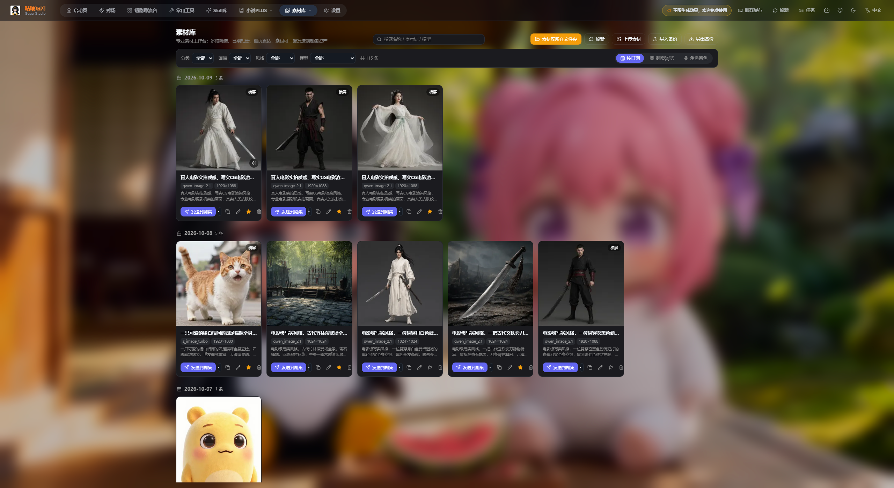
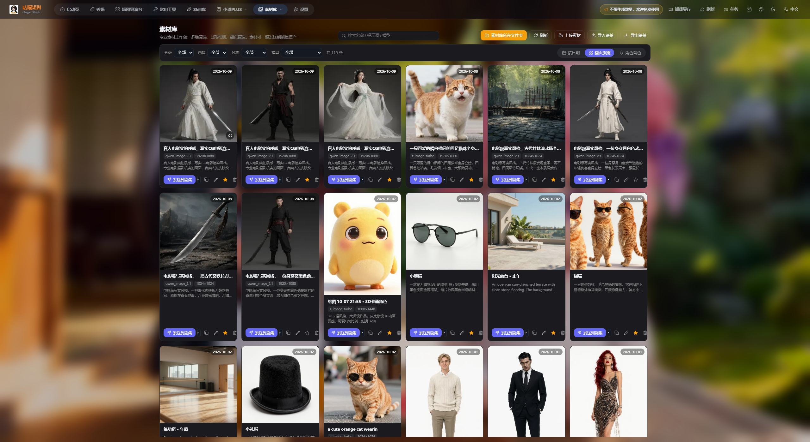
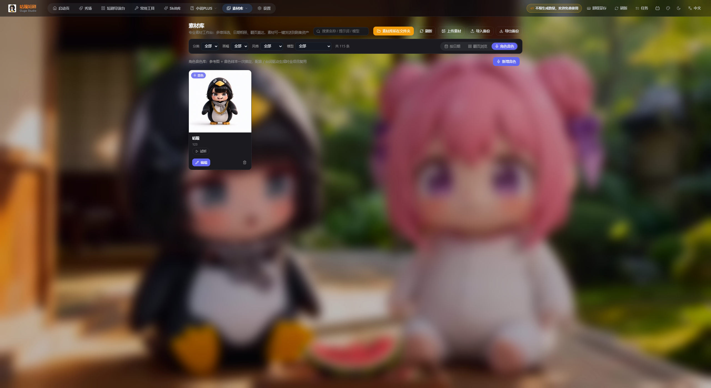
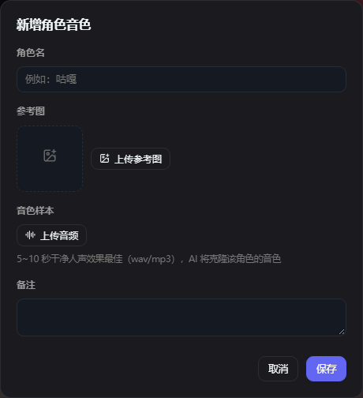
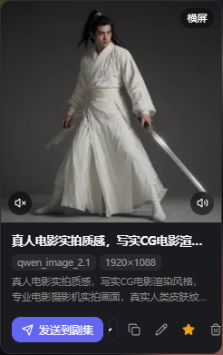
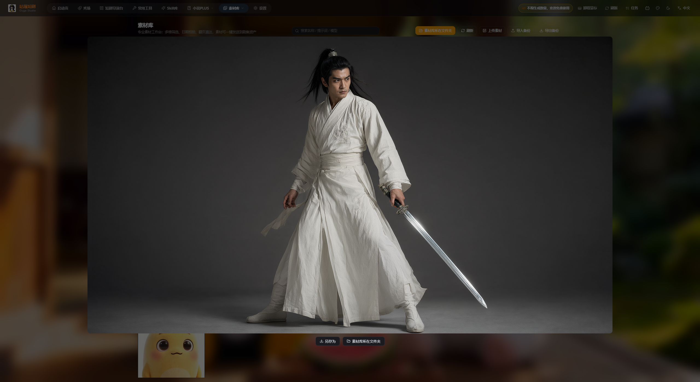
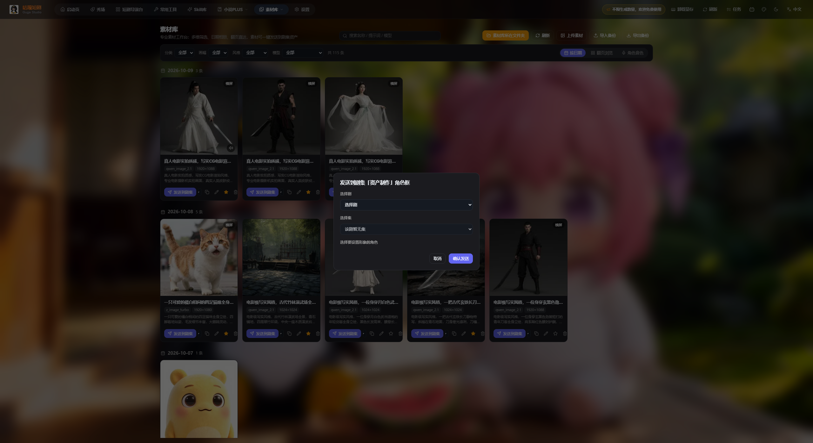
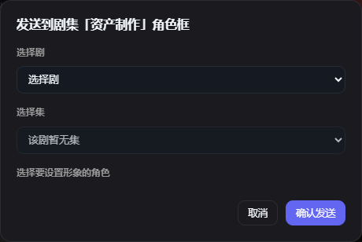
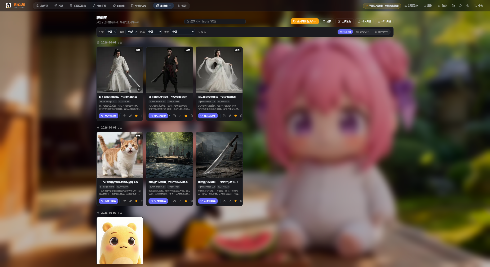

咕嘎的素材库是一个专业素材工作台：多维筛选、日期相册、翻页直达，素材还能一键发送到剧集资产。 凡是常用工具、短剧导演台里生成的角色图、场景图、道具图，都会自动汇集到这里。本教程讲清三种视图怎么用、 素材卡片的每个按钮、角色音色库怎么绑、音色怎么进剧集、以及备份与迁移怎么做。 所有界面图均取自软件真实运行界面（2560×1400 宽屏、深色模式）。
素材库是全软件的「素材总仓」：所有生成过的图片在这里集中管理，并可分发到剧集。

| 视图 | 适合什么时候用 |
|---|---|
| 按日期 | 刚做完一批图，想按生成时间回溯；同一天的素材聚在一组 |
| 翻页浏览 | 素材很多时，一页一页翻着看；卡片右上角标生成日期 |
| 角色音色 | 管理角色音色（参考图 + 音色样本），供配音与台词驱动生成复用 |
整页分三层：标题与操作区 → 筛选条 → 内容区（三种视图）。
| 按钮 | 作用 |
|---|---|
| 搜索名称 / 提示词 / 模型 | 一个搜索框同时匹配素材名称、提示词文本、生成模型三处 |
| 素材库所在文件夹 | 打开素材在磁盘上的真实目录 |
| 刷新 | 重新扫描目录、拉取最新素材 |
| 上传素材 | 批量把本地图片导入素材库 |
| 导入备份 | 从备份文件恢复素材记录 |
| 导出备份 | 把当前素材库导出成备份文件 |
| 维度 | 可选项 |
|---|---|
| 分类 | 男人 / 女人 / 老人 / 小孩 / 妖怪 / 野兽 / 风景 / 建筑 / 室内 / 道具 / 其他 |
| 画幅 | 横屏 / 竖屏 / 方图 |
| 风格 | 写实 / CG写实 / 3D仙侠 / 3D卡通 |
| 模型 | 按生成模型筛选（如 qwen_image_2.1、z_image_turbo） |
筛选条右侧实时显示「共 N 条」，多个维度可叠加。筛选后切到「翻页浏览」可以一页页核对。
默认视图：按生成日期分组，像相册一样回看每天产出的素材。
素材量大时的翻页模式：网格更紧凑，右上角直接标日期，底部翻页。

把角色的参考图与音色样本一次绑定，之后配音、台词驱动生成时全项目复用。


| 字段 | 说明 |
|---|---|
| 角色名 | 例如「咕嘎」 |
| 参考图 | 该角色的形象图；上传后与音色绑定 |
| 音色样本 | 5~10 秒干净人声（wav/mp3）效果最佳，AI 会克隆该角色音色 |
| 备注 | 可选，说明角色语气或用途 |
把鼠标移到卡片上，底部一排按钮全部出现。


| 按钮 | 作用 |
|---|---|
| 发送到剧集 | 把素材指派到某个剧集某个集的角色形象框 |
| 复制 | 复制素材到素材库（生成副本），原件保留 |
| 编辑 | 修改名称、提示词等素材信息 |
| 收藏（星标） | 加入收藏夹，常用素材单独成集 |
| 删除（垃圾桶） | 删除记录，会二次确认；磁盘文件保留 |
素材库与短剧导演台之间的关键通道。


把常用素材挑出来单独成集，顶部导航「素材库」下拉里直接切到收藏夹。

/library?view=favorites）。素材库不只是"看"，还可以"进"和"搬"。
| 操作 | 说明 | 典型场景 |
|---|---|---|
| 导出备份 | 把当前素材库导出成一个备份文件 | 换电脑、重装系统前存档 |
| 导入备份 | 从备份文件恢复记录；会提示「成功 N 条 / 跳过 M 条」 | 新机器恢复素材库 |
备份文件格式不对时会提示「备份文件格式不正确」，别强行改后缀，按软件导出的文件来即可。
点顶部 素材库所在文件夹 直接打开磁盘目录。想批量重命名、换分辨率、或把删除的记录找回，都在这个目录里操作最方便。
| 现象 | 原因与处理 |
|---|---|
| 素材库里看不到刚生成的图 | 常用工具生成后要点存入素材库；导演台产出的会自动入库。入库后点刷新再找 |
| 发送剧集时提示「该剧暂无集」 | 先去短剧导演台给该剧创建集，再回来选择 |
| 发送后剧集里看不到 | 按提示刷新剧集页；确认发送的集与角色正确 |
| 删掉的素材还能找回吗 | 能。删除只移除记录、文件保留在磁盘，到「素材库所在文件夹」找回再上传 |
| 搜索不到素材 | 搜索同时匹配名称、提示词、模型；若搜不到，先清掉筛选条上的分类/画幅/风格/模型条件 |
| 导入备份没反应 | 确认是本软件导出的备份文件；格式不对会提示「备份文件格式不正确」 |
| 音色试听没声音 | 检查音色样本是否已上传（未绑定的会显示「未绑定音色样本」），再点试听 |
| 角色在剧集里长得不一样 | 在素材库把定妆照发送到剧集指定角色，作为该角色的形象锚点 |